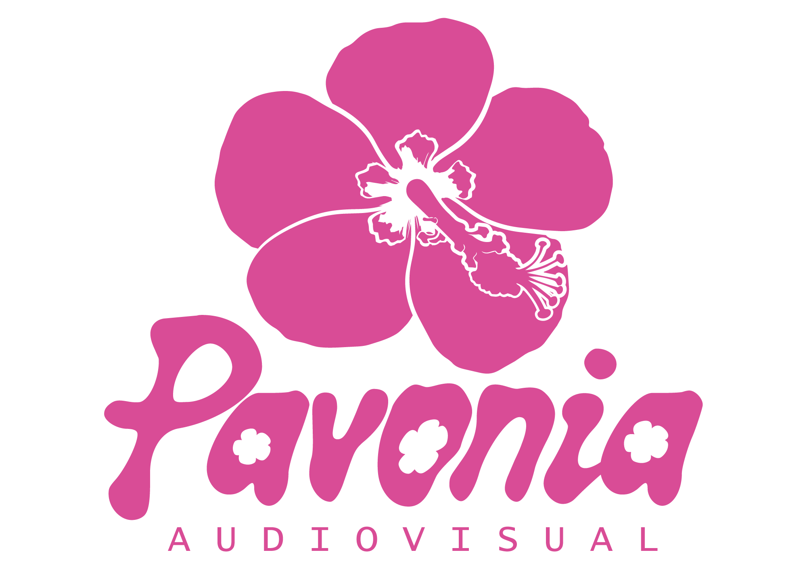
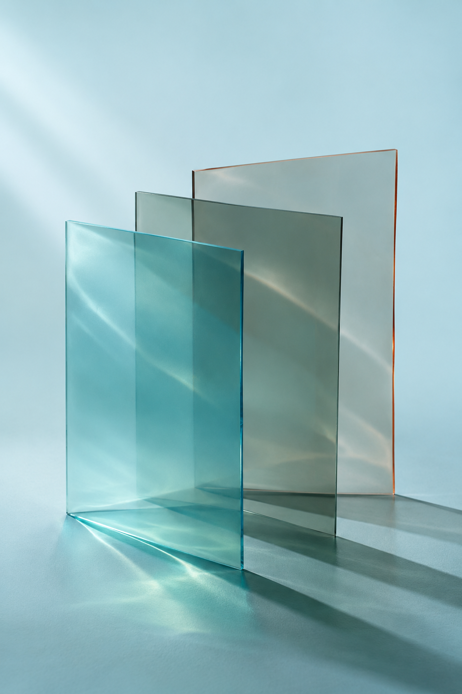
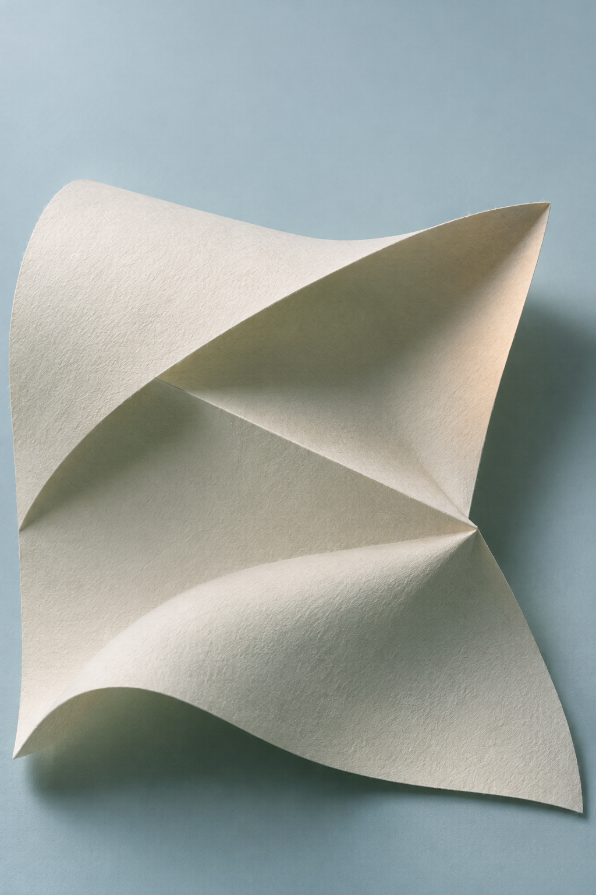
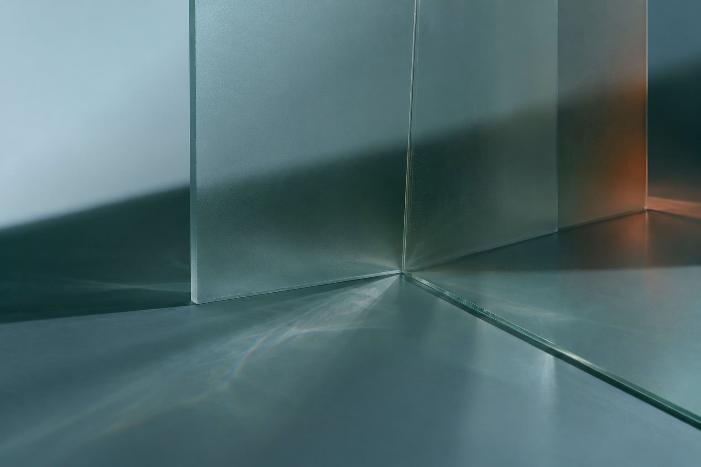
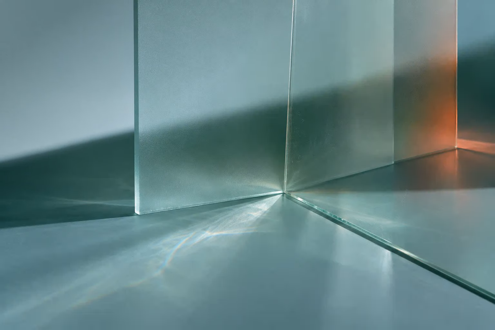
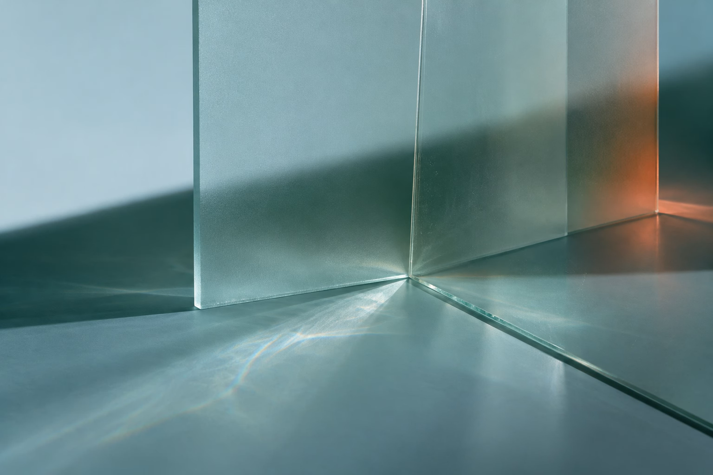

A imagem pede tempo
Estudos conceituais de luz,
matéria e movimento.

suspensão
Estudos conceituais
Três maneiras de olhar


Estudo conceitual
Luz em
suspensão
Lâminas translúcidas recebem luz lateral. As sobreposições deixam o fundo aparecer em diferentes intensidades.
Voltar aos trabalhos
Estudo conceitual
Matéria
dobrada
Uma folha contínua muda de volume com vincos e sombras. O detalhe aproxima a superfície para revelar suas dobras.
Voltar aos trabalhos
Estudo conceitual
Intervalo
Sombras atravessam planos translúcidos. A peça acompanha a mudança da imagem ao longo do tempo.
Assistir ao vídeoEstudo audiovisual
Intervalo,
em movimento
Uma sequência de sombras
atravessa planos translúcidos.
Reprodução sob seu controle.

Antes
A luz encontra a primeira superfície.

Durante
As sombras se sobrepõem.

Depois
O espaço volta a aparecer.
Sobre a prática
Esta exposição reúne estudos conceituais sobre luz, matéria e movimento. Cada trabalho parte de uma situação simples: uma superfície, uma dobra ou uma sombra.
As imagens aproximam detalhes que costumam passar depressa. No vídeo, o tempo entra na composição e transforma o que parecia imóvel.
Projetos e colaborações
Uma conversa começa por uma imagem.
Para conversar sobre um projeto, escolha o estudo que mais se aproxima da sua ideia.
Explorar trabalhos